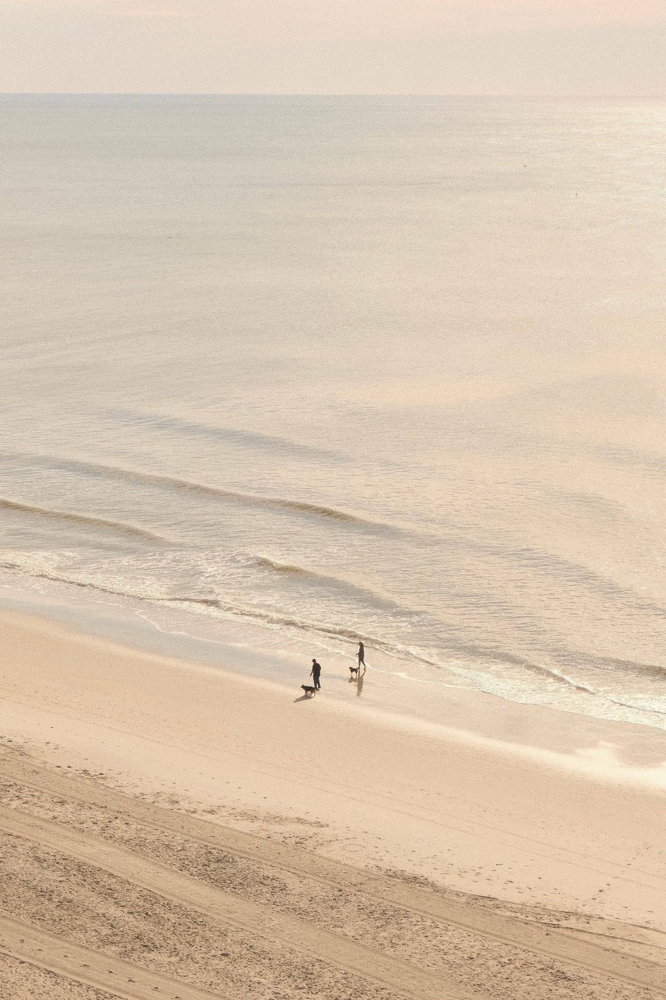

温云畇 LUCY
A112070077
嗨大家好!我是温云畇，目前就讀於世新大學資訊傳播學系，我對於科技與傳播領域充滿熱情與好奇心。在高中求學期間，我培養了扎實的學術與良好的團隊合作能力。除了學業我還是一位柯基愛好者，喜歡與我家可愛的柯基一起度過美好時光。我喜歡挑戰自己，並不斷追求成長。期待能在未來的學習與工作中，與各位共同探索、學習、進步!
這是一段測試的字
| 姓名 | 性別 | 電子郵件 |
|---|---|---|
| 温云畇 | 女 | yunyunwen84@gmail.com |
| 外星人 | 不知道 | 沒有吧 |
| 耶 | 喔 | 喔 |
- 第一個項目
- 第二個項目Google
- 第三個項目
我對於科技與傳播領域充滿熱情與好奇心。在高中求學期間，我培養了扎實的學術與良好的團隊合作能力。除了學業我還是一位柯基愛好者，喜歡與我家可愛的柯基一起度過美好時光。我喜歡挑戰自己，並不斷追求成長。期待能在未來的學習與工作中，與各位共同探索、學習、進步!我對於科技與傳播領域充滿熱情與好奇心。在高中求學期間，我培養了扎實的學術與良好的團隊合作能力。除了學業我還是一位柯基愛好者，喜歡與我家可愛的柯基一起度過美好時光。我喜歡挑戰自己，並不斷追求成長。期待能在未來的學習與工作中，與各位共同探索、學習、進步!對於科技與傳播領域充滿熱情與好奇心。在高中求學期間，我培養了扎實的學術與良好的團隊合作能力除了學業我還是一位柯基愛好者，喜歡與我家可愛的柯基一起度過美好時光。我喜歡挑戰自己，並不斷追求成長。期待能在未來的學習與工作中，與各位共同探索、學習、進步!對於科技與傳播領域充滿熱情與好奇心。在高中求學期間，我培養了扎實的學術與良好的團隊合作能力。除了學業我還是一位柯基愛好者，喜歡與我家可愛的柯基一起度過美好時光。我喜歡挑戰自己，並不斷追求成長。期待能在未來的學習與工作中，與各位共同探索、學習、進步!我對於科技與傳播領域充滿熱情與好奇心。在高中求學期間，我培養了扎實的學術與良好的團隊合作能力。除了學業我還是一位柯基愛好者，喜歡與我家可愛的柯基一起度過美好時光。我喜歡挑戰自己，並不斷追求成長。期待能在未來的學習與工作中，與各位共同探索、學習、進步!我對於科技與傳播領域充滿熱情與好奇心。在高中求學期間，我培養了扎實的學術與良好的團隊合作能力。除了學業我還是一位柯基愛好者，喜歡與我家可愛的柯基一起度過美好時光。我喜歡挑戰自己，並不斷追求成長。期待能在未來的學習與工作中，與各位共同探索、學習、進步!我對於科技與傳播領域充滿熱情與好奇心。在高中求學期間，我培養了扎實的學術與良好的團隊合作能力。除了學業我還是一位柯基愛好者，喜歡與我家可愛的柯基一起度過美好時光。我喜歡挑戰自己，並不斷追求成長。期待能在未來的學習與工作中，與各位共同探索、學習、進步!